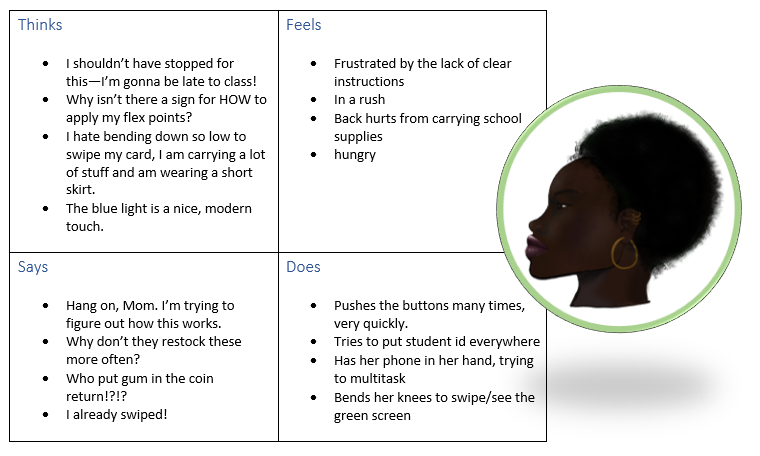

The vending machine aims to provide users with quick and easy access to snacks and drinks.
Brown University hosts many vending machines. This analysis targets a machine sitting in Vartan Gregorian Quad (near Josiah’s dining hall) that contains food items.
The vending machine’s interface facilitates user payment and delivery of an item from the machine to the user. This machine’s interface consists of:

Is on her way (and late!) to art class. She isn’t responsible about eating lunch and is looking for a quick substitute. She is also carrying a lot of school supplies and is talking on the phone.
Just finished a long day of research and teaching. He wants some skittles for the drive home. He is looking forward to relaxing with his family.